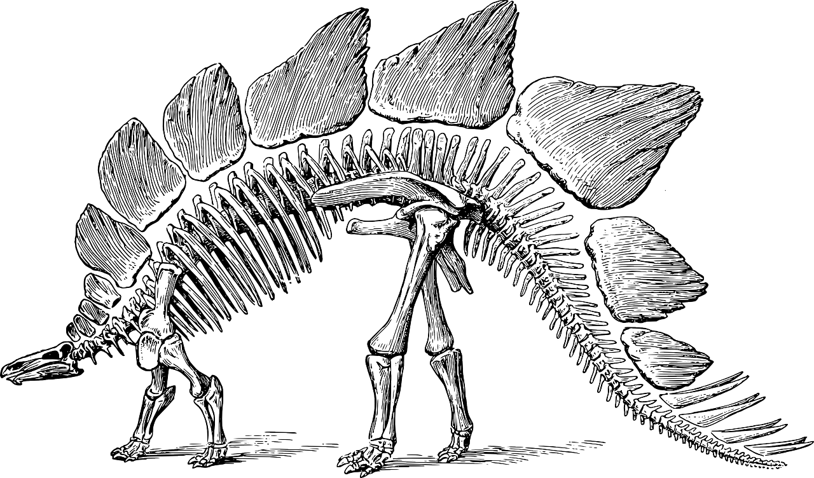

La paleontología (del griego «παλαιος» palaios = antiguo, «οντο» onto = ser, «-λογία» -logía = tratado, estudio, ciencia) es la ciencia natural que estudia e interpreta el pasado de la vida sobre la Tierra a través de los fósiles. Se encuadra dentro de las ciencias naturales, posee un cuerpo de doctrina propio y comparte fundamentos y métodos con la geología y la biología con las que se integra estrechamente. Puede subdividirse en paleobiología, tafonomía y biocronología, e intercambia información necesaria con otras disciplinas (estudio de la evolución de los seres vivos, bioestratigrafía, paleogeografía o paleoclimatología, entre otras).
Entre sus objetivos están, además de la reconstrucción de los seres vivos que vivieron en el pasado, el estudio de su origen, de sus cambios en el tiempo (evolución y filogenia), de las relaciones entre ellos y con su entorno (paleoecología, evolución de la biosfera), de su distribución espacial y migraciones (paleobiogeografía), de las extinciones, de los procesos de fosilización (tafonomía) o de la correlación y datación de las rocas que los contienen (bioestratigrafía).
La paleontología tuvo (y tiene) muchísima importancia al permitir entender que la Tierra y sus seres vivos están en constante cambio, los cuales se remontan muchos miles de millones de años en el pasado. Esta comprensión, desarrollada de la mano de los avances en el conocimiento de los procesos geológicos, motivó un cambio en la percepción del tiempo, dando origen al concepto de "tiempo profundo".
La paleontología permite entender la actual composición (biodiversidad) y distribución de los seres vivos sobre la Tierra (biogeografía) —antes de la intervención humana—, ha aportado pruebas indispensables para la solución de dos de las más grandes controversias científicas del pasado siglo, la evolución de los seres vivos y la deriva de los continentes, y, de cara a nuestro futuro, ofrece herramientas para el análisis de cómo los cambios climáticos pueden afectar al conjunto de la biosfera. Además, la paleontología, al generar conocimiento sobre etapas de la historia de la Tierra donde los ambientes y los seres vivos fueron muchas veces radicalmente diferentes a los que se observan hoy, permite desarrollar hipótesis o especular sobre el origen y la potencial presencia de vida en otros cuerpos celestes.